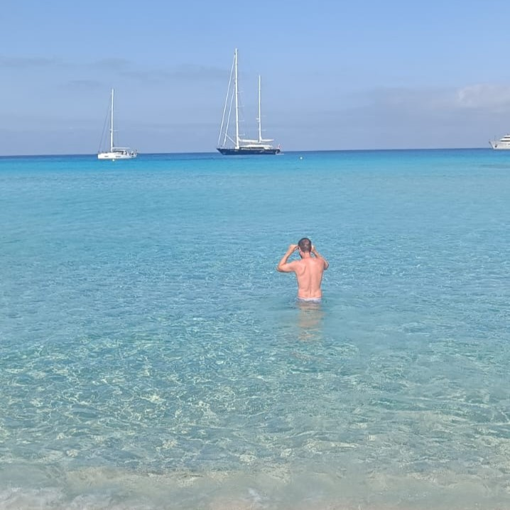
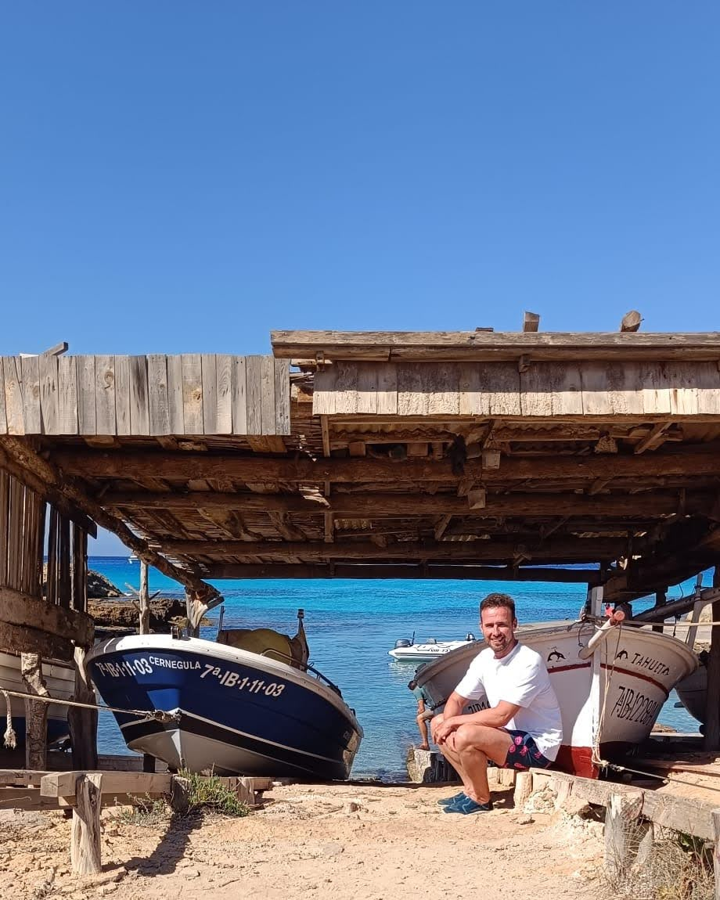
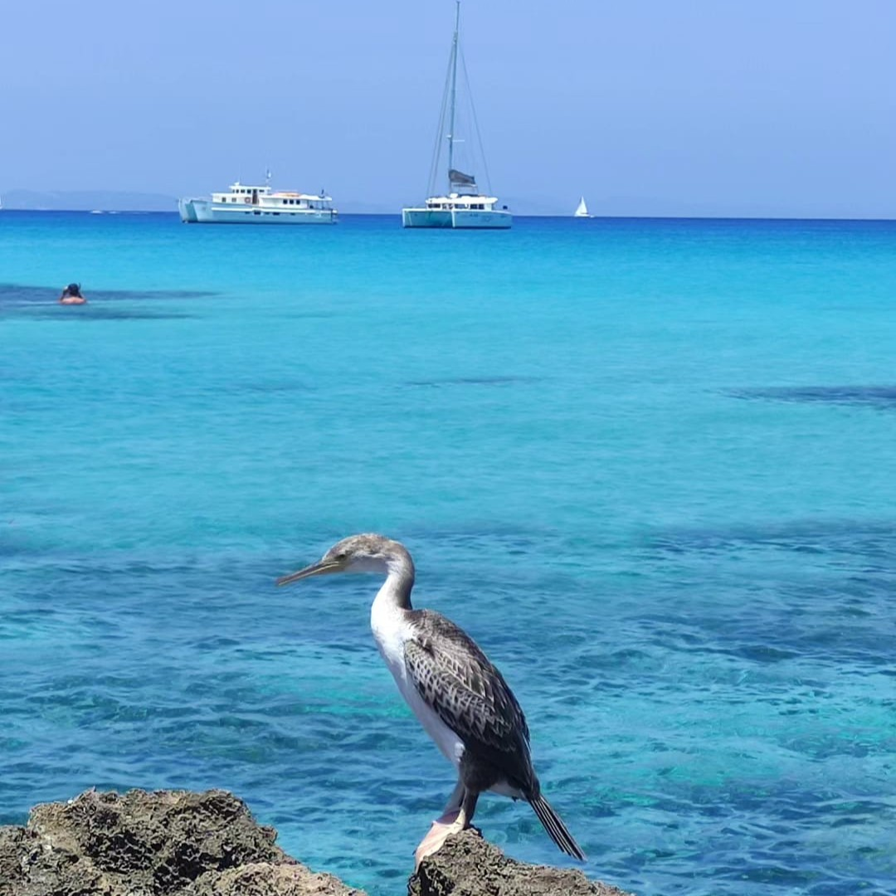
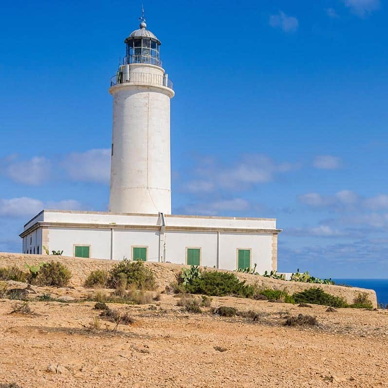
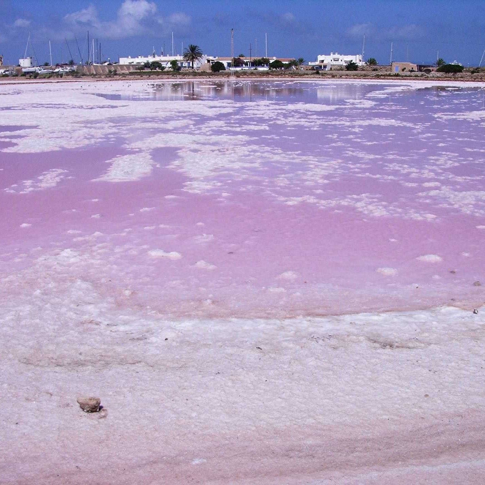
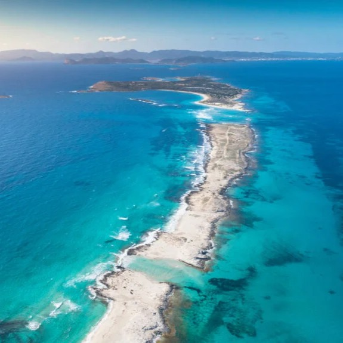
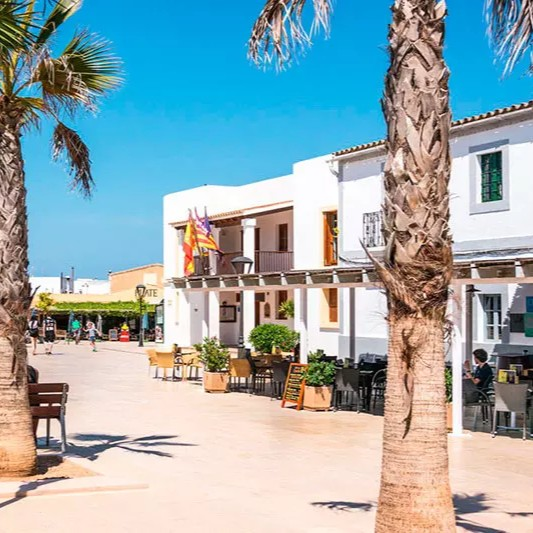
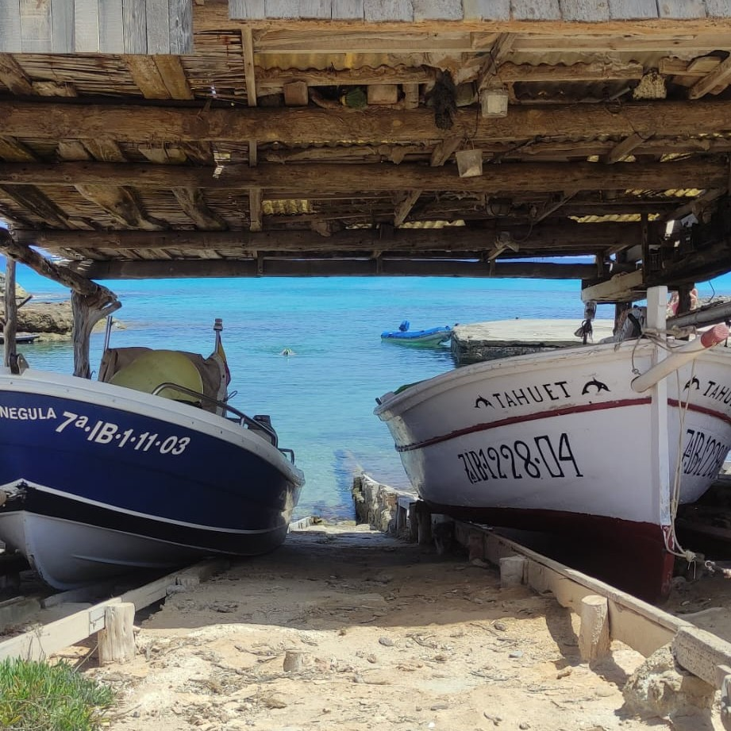

Aguas turquesas, playas vírgenes y el paraíso mediterráneo de las Pitiusas
Formentera es la isla más pequeña y meridional de las Islas Baleares, conocida como el "Caribe mediterráneo". Con sus aguas turquesas, playas de arena blanca y un ambiente hippie-chic que perdura desde los años 60, es un destino ideal para los amantes de la naturaleza, la tranquilidad y el mar. Declarada Reserva de la Biosfera por la UNESCO en 2020, la isla mantiene un desarrollo turístico sostenible, sin grandes complejos hoteleros y con una extensa red de caminos para bicicletas.
Esta guía de 5 días te llevará por los paraísos playeros más espectaculares: la Playa de Ses Illetes (considerada una de las mejores playas del mundo), Cala Saona, Playa de Migjorn y Es Caló; así como por sus puntos más emblemáticos: el Faro de la Mola, el Pueblo de Sant Francesc, las Salinas y la Laguna de Estany Pudent. Formentera no tiene aeropuerto, por lo que se accede en ferry desde Ibiza (30 minutos). Alquilar una bici o una moto es la mejor forma de recorrer la isla.
---Mi recomendación personal es alojarse en Es Pujols si es tu primera vez y quieres tener servicios cerca, o en algún agroturismo en Migjorn si buscas tranquilidad y lujo. Formentera es pequeña, así que aunque te alojes en un extremo, nunca tardarás más de 20 minutos en llegar a cualquier playa.
🚲 Bici o moto: La isla es perfecta para bicicletas (llana y con carriles bici). Alquila con antelación en verano. Las motos son más rápidas pero el encanto de Formentera se disfruta más en bici.
🌊 Playa de Ses Illetes: Llega antes de las 9:30am en verano si quieres encontrar sitio. En julio y agosto, a las 10am ya está llena. El aparcamiento es de pago (5-10€).
🎫 Límite de vehículos: En verano, el acceso a Ses Illetes está restringido cuando el aparcamiento se llena (sobre las 10:30am). Ve pronto o ve en bici desde La Savina.

Ses Illetes es la playa más famosa de Formentera y considerada repetidamente como una de las mejores playas del mundo. Es un paraíso de arena blanca y aguas turquesas, situada en el norte de la isla, dentro del Parque Natural de Ses Salines (compartido con Ibiza). Desde la playa se ven las islas de Espalmador y Espardell.
La playa tiene varios tramos: el más concurrido cerca del aparcamiento, y zonas más salvajes al final (donde se puede llegar andando por la arena). No tiene servicios, solo un chiringuito de lujo. El agua es transparente y poco profunda, ideal para familias. El acceso cuesta 5-10€ por coche en temporada alta.

Cala Saona es una pequeña cala en la costa oeste de Formentera, famosa por sus aguas turquesas y por ser el mejor lugar para ver el atardecer. Está rodeada de acantilados rojizos y tiene un chiringuito (El Mirador) con vistas espectaculares.
La playa es de arena fina y el fondo es suavemente inclinado, ideal para bañarse. Es más pequeña que Ses Illetes, por lo que en verano se llena rápido. También hay un restaurante con terraza sobre el mar (Can Rafalet). Es imprescindible llegar a las 19:30 para ver cómo el sol se pone frente a la isla de Conejera.

Migjorn es la playa más larga de Formentera (casi 5 km), situada en la costa sur. En realidad es una sucesión de pequeñas calas y playas vírgenes: Es Arenals, Es Ram, Sa Roqueta, Ca Marí, Ses Platgetes... Son playas de arena blanca y aguas transparentes, mucho menos masificadas que Ses Illetes.
A lo largo de Migjorn hay varios chiringuitos (Blue Bar, 10.7, Beso Beach) y restaurantes con tumbonas. Algunas calas son nudistas. Es ideal para pasear, encontrar tu propia cala y disfrutar de la tranquilidad. El acceso es por caminos de tierra desde la carretera principal (se aparca al borde de la carretera).

El Faro de la Mola está situado en el altiplano del este de Formentera, sobre acantilados de 120 metros de altura. Es el lugar más emblemático de la isla, famoso por las puestas de sol más espectaculares (el sol se pone justo detrás del horizonte marino sin obstáculos). El faro fue construido en 1861 y es uno de los más altos de Baleares.
Alrededor del faro hay un restaurante (El Faro, de alta cocina), una cafetería, una tienda y varios miradores. El poeta francés Jules Verne mencionó este faro en su novela "Héctor Servadac". En el camino de acceso, encontrarás el Mercado Hippie de la Mola (miércoles y domingos en verano).

El Estany Pudent es una laguna de agua hipersalina en el norte de Formentera (junto a las Salinas). Es uno de los humedales más importantes de Baleares, donde se pueden observar flamencos rosas, avocetas, cigüeñuelas y otras aves migratorias. Hay un centro de interpretación (Ses Salines) y un sendero de madera que bordea la laguna.
Las Salinas de Formentera (aún en explotación artesanal) producen sal de forma tradicional. El paisaje es muy fotogénico, con montones de sal blanca y las aguas rosadas por las bacterias halófilas. Se puede visitar la Ecomuseo de la Sal.

Espalmador es una pequeña isla deshabitada situada al norte de Ses Illetes, accesible solo en barco. Es famosa por su laguna de lodo (fangos con propiedades curativas) y por sus playas vírgenes y aguas cristalinas. La isla es de propiedad privada, pero se puede desembarcar en sus playas para bañarse (no se puede acceder al interior).
Para llegar, puedes alquilar una lancha (con o sin patrón) en La Savina, o tomar un taxi-boat desde el embarcadero de Ses Illetes (recorrido de 5 minutos). La experiencia es única: bañarte en el fango, nadar en aguas turquesas y sentirte en una isla desierta.

Sant Francesc es la capital de la isla, un pueblo blanco y tranquilo con calles empedradas. Su centro es la Iglesia de Sant Francesc (siglo XVIII), una iglesia fortificada con cañones, construida para defenderse de los piratas. La plaza de la iglesia es el punto de encuentro, con cafeterías y tiendas.
Alrededor, encontrarás el Museo de Formentera (historia y etnografía), el Ajuntament y varias galerías de arte. Los jueves por la mañana hay un mercado de agricultores. Es el lugar ideal para pasear y comprar artesanía local (cerámica, jabones, sal).

Es Caló es un pequeño puerto pesquero en la costa este de Formentera, famoso por sus restaurantes de pescado fresco (langosta, san Jaime, pescado a la brasa). El pueblo conserva el espíritu marinero y no está muy masificado. Hay una pequeña cala de piedras (no arena) donde algunos nadan.
Es el lugar perfecto para comer pescado o marisco recién sacado del mar, con vistas a los barcos de pesca. Muy cerca está la Torre de la Savina (vigía antigua) y el cami de sa pujada (ruta de senderismo al faro).
Formentera es una isla para disfrutar con calma. No intentes verlo todo en 2 días. Dedica al menos 4-5 días: 2 días para las playas imprescindibles (Ses Illetes, Cala Saona, Migjorn) y 1 día para Espalmador, 1 día para la Mola y Sant Francesc.
El alquiler de bicicleta o moto es imprescindible para disfrutar de la libertad que ofrece la isla. Las carreteras son tranquilas y hay carriles bici en la mayoría de los trayectos.
Espalmador es una experiencia increíble pero cara. Si tu presupuesto es limitado, puedes ver la isla desde la playa de Ses Illetes (se ve perfectamente). El fango no es para todos (olor fuerte a azufre).
🌅 Los atardeceres en Formentera son sagrados: Cala Saona, Faro de la Mola y la punta de Migjorn son los mejores lugares.
{kind=link}
{kind=link}
{kind=link}
{kind=link}
{kind=link}
{kind=link}
{kind=link}
{kind=link}
{kind=link}
{kind=link}
{kind=link}
{kind=link}
{kind=link}
{kind=link}
{kind=link}
{kind=link}
{kind=link}
{kind=link}
{kind=link}
{kind=link}